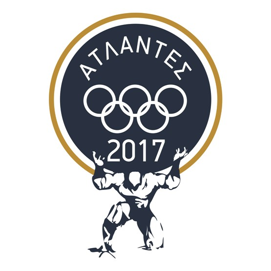

ΑΡΣΗ ΒΑΡΩΝ
Η άρση βαρών είναι ένα από τα αρχαίοτερα δυναμικά αγωνίσματα με καταγωγή από Ελλάδα, Κίνα και Αίγυπτο. Υπάρχουν καταγεγραμμένα στοιχεία ότι οι αρχαίοι Έλληνες αθλητές σήκωναν με το ένα χέρι τεραστίων όγκων πέτρες προκειμένου να αποκτήσουν δύναμη και καλή φυσική κατάσταση. Είναι ένα εντυπωσιακό άθλημα με τεράστια οφέλη όμως επιφέρει τραυματισμούς αν δεν υπάρχει καλή τεχνική κατάρτιση.
Η άρση βαρών είναι ένα ιδιαίτερα κοπιαστικό και επίπονο άθλημα το οποίο όμως προσδίδει τεράστια μυϊκή ανάπτυξη και ισχύ σε αυτόν που το κάνει. Η τεχνική κατάρτιση είναι αναπόσπαστο στοιχείο της προπόνησης προκειμένου να αποφευχθούν τραυματισμοί και να μεγιστοποιηθεί η επίδοση.
Βαρών / Άρσης Βαρών σε Πάγκο στο Facebook
Διοίκηση / Προπονητές
| # | Όνομα | Θέση | Από |
|---|---|---|---|
| 1 | Αστέριος Μπαλατζής | Πρόεδρος / Κριτής Αγώνων | 2017 / 2009 |
| 2 | Αναστάσιος Λιάπης | Προπονητής | 2009 |
| 3 | Αθανάσιος Καραθανάσης | Προπονητής | 2009 |
΄Ωρες Λειτουργείας / Προπονητήριο
| # | Ημέρα | ΄Ώρα | Προπονητήριο |
|---|---|---|---|
| 1 | Δευτέρα ως Παρασκευή | 14:00 εως 21:00 | Κλειστό Γυμναστήριο Πολυκλαδικού |
| 2 | Σάββατο | Κατόπιν Συνεννόησης |